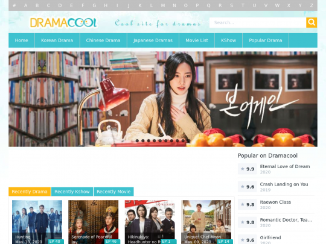
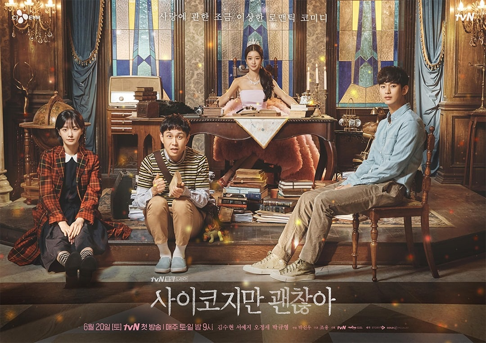

DRAMA COOL

Dramacool is an American video streaming website headquartered in San Mateo, California. The company also has offices in Singapore, Tokyo, Japan, and Seoul, South Korea.
Razmig Hovaghimian, Changseong Ho and Jiwon Moon founded Viki in 2007. Funding for the company originally came from Neoteny Labs, a Singapore start-up fund headed by Joichi Ito, and from the co-founder of LinkedIn, Reid Hoffman.The company moved to Singapore in 2008 to take advantage of generous government backing and the city-state’s role as a pan-Asian hub.In December 2010, Viki exited the beta phase of its software and made its services available to the general public.
In September 2013 it was reported that the company was being acquired by the Japanese company Rakuten for $200 million.
Korean dramas are popular worldwide, partially due to the spread of Korean popular culture (the "Korean Wave"), and their widespread availability via streaming services which often offer subtitles in multiple languages. Many K-dramas have been adapted throughout the world, and some have had great impact on other countries. Some of the most famous dramas have been broadcast via traditional television channels in other countries. For example, Dae Jang Geum (2003) was sold to 91 countries. K-dramas have attracted attention for their fashion, style and culture all over the world. The rise in popularity of Korean dramas had led to a great boost to fashion line.
Dramacool is an American video streaming website headquartered in San Mateo, California. The company also has offices in Singapore, Tokyo, Japan, and Seoul, South Korea.
Razmig Hovaghimian, Changseong Ho and Jiwon Moon founded Viki in 2007. Funding for the company originally came from Neoteny Labs, a Singapore start-up fund headed by Joichi Ito, and from the co-founder of LinkedIn, Reid Hoffman.The company moved to Singapore in 2008 to take advantage of generous government backing and the city-state’s role as a pan-Asian hub.In December 2010, Viki exited the beta phase of its software and made its services available to the general public.
In September 2013 it was reported that the company was being acquired by the Japanese company Rakuten for $200 million.
K-DRAMA
Korean dramas are popular worldwide, partially due to the spread of Korean popular culture (the "Korean Wave"), and their widespread availability via streaming services which often offer subtitles in multiple languages. Many K-dramas have been adapted throughout the world, and some have had great impact on other countries. Some of the most famous dramas have been broadcast via traditional television channels in other countries. For example, Dae Jang Geum (2003) was sold to 91 countries. K-dramas have attracted attention for their fashion, style and culture all over the world. The rise in popularity of Korean dramas had led to a great boost to fashion line.
TRENDING DRAMA

It's Okay to Not Be Okay (RR: Saikojiman gwaenchana; lit. Psycho But It's Okay) is a 2020 South Korean romantic television series starring Kim Soo-hyun and Seo Ye-ji. The series tells an unusual romance story between two people who end up healing each other's emotional and psychological wounds. It aired on tvN every Saturday and Sunday at 21:00 (KST) time slot from June 20 to August 9, 2020 for 16 episodes. The series is available worldwide on Netflix.
It's Okay to Not Be Okay (RR: Saikojiman gwaenchana; lit. Psycho But It's Okay) is a 2020 South Korean romantic television series starring Kim Soo-hyun and Seo Ye-ji. The series tells an unusual romance story between two people who end up healing each other's emotional and psychological wounds. It aired on tvN every Saturday and Sunday at 21:00 (KST) time slot from June 20 to August 9, 2020 for 16 episodes. The series is available worldwide on Netflix.
Copyright © 2020 Drama Cool
dramacool@company.comFacebook
Instagram
Twitter
dramacool@company.com